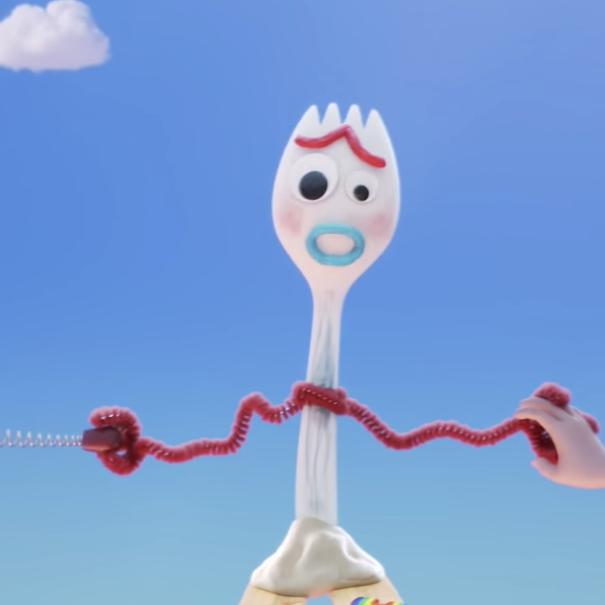

Forky is a character from the popular franchise Toy Story.
Forky is a plastic spork who is handcrafted by the main character Bonnie Anderson.
- I like the humor that Forky has with the other characters in Toy Story.
- Forky is able to help the other character understand their purposes as a toy.
- I just like the design of Forky and how it reminds me of how I used to build toys.